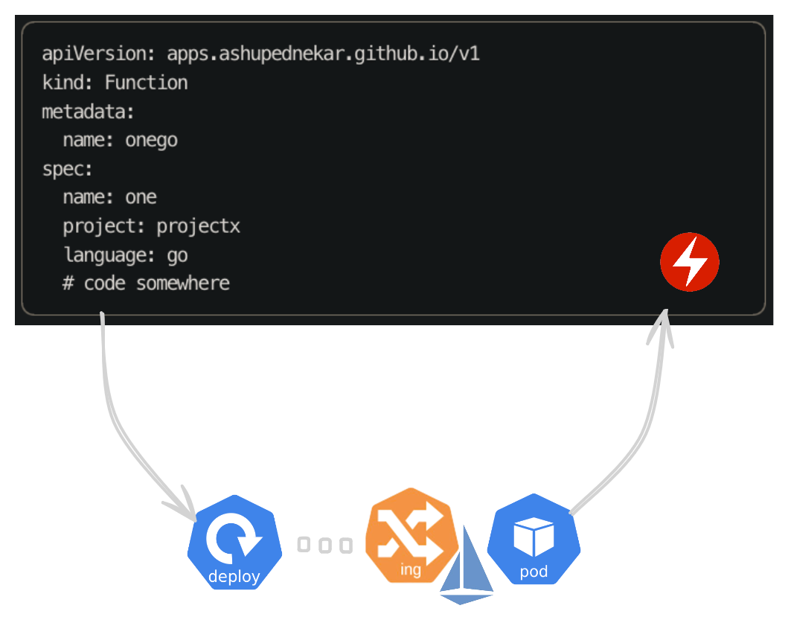

<div style="display: flex; flex-direction: column; gap: 0.75rem; width: 100%; box-sizing: border-box; padding-top: 0.15rem; padding-bottom: 0.35rem; min-height: 0;">
  <div style="width: 100%; min-width: 0; flex: 0 1 auto; max-height: min(52vh, 480px); display: flex; align-items: flex-start; justify-content: center;">
    
  </div>
  <div style="flex: 0 0 auto; font-size: clamp(1.02rem, 1.85vw, 1.18rem); line-height: 1.5; max-width: min(48em, 100%); color: inherit;">
    An operator basically lets us have Kubernetes understand a custom YAML and do what we need to <span style="white-space: nowrap">on the cluster</span>
  </div>
</div>
